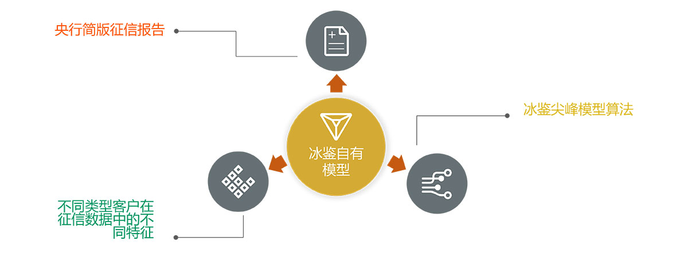

冰鉴线上消费贷解决方案
覆盖500-5000元小额消费贷场景及5000-50000元大额消费贷场景。目前，通过冰鉴强大的人工智能算法，冰鉴推出了火眸分、慧眼分等产品，助力金融机构做出更精准的决策。
该产品现在已拥有百家客户每月超过3000万查询量，为客户提供更加规范安全、高效便捷、系统全面的服务。
精准营销产品
冰鉴精准营销，通过整合信息价值，训练优化模型等方法，帮助银行不同渠道筛选潜在客户（包括未被央行信用报告覆盖企业）从而提升营销效率，降低获客成本。不仅如此，该产品还能协助呼叫中心和线下信贷人员过滤大量不符合申请资质的申请人，剔除高危人群的同时，定义优质客户。
| 产品名称 | 精准营销标准模型 | 使用场景 | 货前环节 |
|---|---|---|---|
| 银行输入渠道信息 | 设定参数 | 冰鉴输出 | 主要用途 |
| 存量客户历史交易记录 | 优质客户要求 | 客户排名与归类 | 剔除高危人群 定义优质客户 协助呼叫中心和线下信贷人员过滤大量不符合申请资质的申请人 |
小微企业定额定价模型
该产品可以帮助银行快速准确对小微企业贷款，尤其是未被央行信用报告覆盖的小微企业贷款，进行风险评估，决定借贷额度、还贷利息以及还贷周期的同时，还能有效减少信贷员的道德风险和主观评估差异，并对客户进行差异化判断。
| 产品名称 | 小微企业定额定价模型 |
|---|---|
| 适用场景 | 贷前环节 |
| 银行输入 | 行内流水、人行报告、企业信息、纳税信息等企业基本信息 |
| 设定参数 | 预期收益率及违约概率 |
| 冰鉴输出 | 贷款上限和贷款利率 |
| 主要用途 |
决定借贷额度、还贷利息以及还贷周期 减少信贷员的道德风险和主观评估差异 对客户进行差异化判断 |
小微企业贷后监控模型
产品通过自主研发的模型，可以对已经放出的贷款进行有效实时监控，帮助银行第一时间对风险做出干预的同时，能够帮助线下信审管理人员，有效提高人均贷后监管企业数量，大幅度提升人工干预质量。
| 产品名称 | 小微企业贷后监控模型 |
|---|---|
| 适用场景 | 贷中/后环节 |
| 银行输入 | 行内流水、人行报告、企业信息、纳税信息等 |
| 设定参数 | 预期收益率及监控周期 |
| 冰鉴输出 | 预警名单及风险点 |
| 主要用途 |
监控已发贷款 提高信审人员人均贷后监管企业数量 提升人工干预质量 |
央行简版报告模型
该产品是基于央行简版征信报告以及不同类型客户在风控数据中的不同特征，配合冰鉴领先的模型算法，推出的冰鉴自有模型，帮助商户实现快速准确审批。
